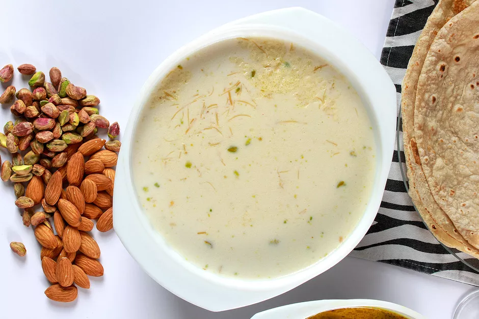

Indian Rice Pudding (Kheer)

Flavored with cardamom, this creamy rice pudding is full of nuts..
It's a great dessert for any time of the year. In south and east India versions of it are made for certain festivals.
In the South, kheer is called payasam and in the east, it is known as payesh.
Ingredients
- 2 liters full-cream milk
- 1 can/400 grams sweetened condensed milk
- 1 tsp. cardamom powder
- 1 cup of sugar
- 1 cup Basmati rice
- 50 grams almonds blanched and slivered
- 50 grams raisins
- A few strands of saffron
- Optional: rose petals to garnish
Steps to Make it
- Wash the rice well and soak for half an hour in enough water to cover it fully.
- Put the milk, condensed milk and sugar in a deep, thick-bottomed pan and boil. When the milk comes to a boil, add the rice and simmer. Cook till the milk thickens and reduces to half its original volume.
- Add the almonds, raisins, and cardamom and cook for 5 more minutes.
- Turn off the cooktop and add the saffron. Stir well.
- Allow the kheer to cool, then chill.
- Serve cold garnished with rose petals.